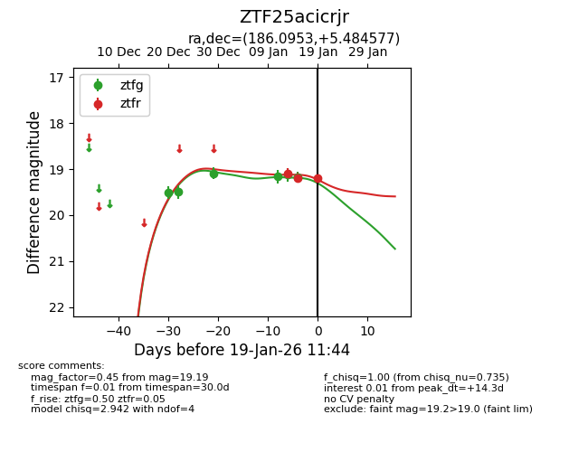
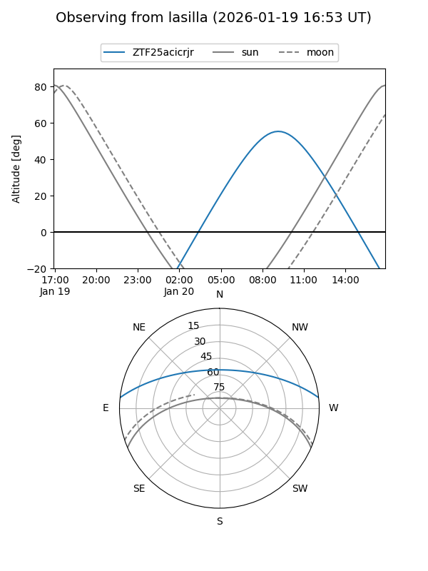
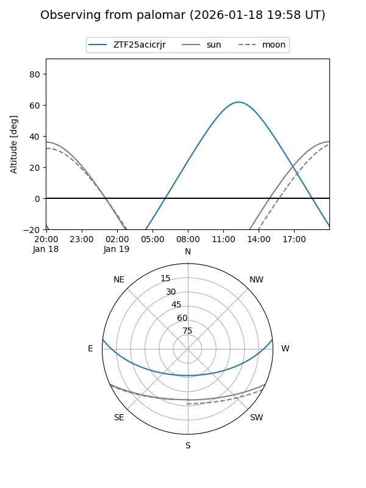
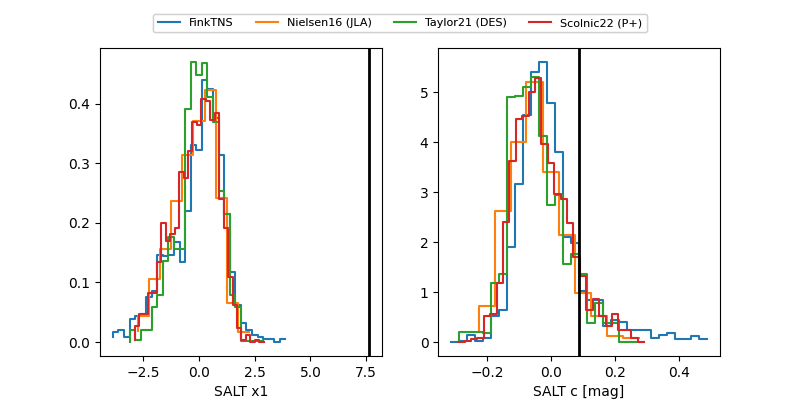

ZTF25acicrjr
Target ZTF25acicrjr at 2026-01-19 11:46
Aliases and brokers:
FINK: link
Lasair: link
ALeRCE: link
alt names
ZTF25acicrjr (ztf,fink_ztf)
Coordinates:
equatorial (ra, dec) = 186.0953,+5.48458
equatorial (HMS+DMS) = 12:24:22.88,+05:29:04.48
galactic (l, b) = (285.1548,+67.41773)
Flags:
Photometry:
last ztfg=19.17, ztfr=19.19
5 ztfg, 3 ztfr detections
Lightcurve

Visibility


Additional plots
